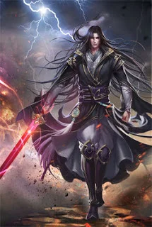

Martial god asura

Géneros: Acción, Aventura, Drama, Fantasía, Harem, Artes Marciales, Maduro, Romance, Tragedia.
Idioma: Español.
Sinopsis:
En términos de potencial: incluso si no eres un genio, puedes aprender técnicas y habilidades marciales. Incluso puedes aprender sin un instructor.
En términos de fuerza: incluso si tienes millones de tesoros, puede que no puedas vencer a mi grandiosa fuerza mundial espiritista
¿Qué quien soy? Todas las cosas vivientes en el mundo me ve como Asura. Como sea, no sabia nada de eso. Así que como Asura, me convertí en el Dios Marcial.
Lista de capítulos
Atrio exterior para discípulo
Capitulo 1: Atrio exterior para discípuloBelleza anciana
Capitulo 2: Belleza ancianaEl comienzo de la examinación
Capitulo 3: El comienzo de la examinaciónAun mas feroz que las bestias feroces
Capitulo 4: Aun mas feroz que las bestias ferocesFundador dragon azur
Capitulo 5: Fundador dragon azur¿No me digas que es él?
Capitulo 6: ¿No me digas que es él?Caza de medicina espiritual
Capitulo 7: Caza de medicina espiritualEncuentro por coincidencia con Chu Yue
Capitulo 8: Encuentro por coincidencia con Chu YueTestifico por él
Capitulo 9: Testifico por él